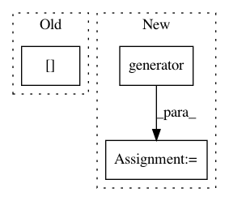

83e80f82d7cf5aa0444c9bdc8709304f10b8d7fc,docs/_static/examples/gan.py,,saver_callback,#Any#,115
Before Change
def saver_callback(state):
batches_done = state[tb.EPOCH] * len(state[tb.GENERATOR]) + state[tb.BATCH]
if batches_done % sample_interval == 0:
save_image(state[GEN_IMGS].data[:25], "images/%d.png" % batches_done, nrow=5, normalize=True)
// Configure data loader
After Change
def saver_callback(state):
batches_done = state[tb.EPOCH] * len(state[tb.GENERATOR]) + state[tb.BATCH]
if batches_done % sample_interval == 0:
samples = state[tb.MODEL].generator(batch)
save_image(samples, "images/%d.png" % batches_done, nrow=5, normalize=True)
In pattern: SUPERPATTERN
Frequency: 3
Non-data size: 3
Instances
Project Name: ecs-vlc/torchbearer
Commit Name: 83e80f82d7cf5aa0444c9bdc8709304f10b8d7fc
Time: 2018-09-12
Author: mp2u16@ecs.soton.ac.uk
File Name: docs/_static/examples/gan.py
Class Name:
Method Name: saver_callback
Project Name: HyperGAN/HyperGAN
Commit Name: 365c861ccac7588596907b0cff8ddf69cc7a966c
Time: 2020-07-27
Author: mikkel@255bits.com
File Name: hypergan/samplers/grid_sampler.py
Class Name: GridSampler
Method Name: _sample
Project Name: acoular/acoular
Commit Name: 89eebf9d48b203e04bfdbd9dd79716a5291a5fcd
Time: 2019-09-04
Author: kujawski.ad@gmail.com
File Name: acoular/tprocess.py
Class Name: TimeCache
Method Name: result